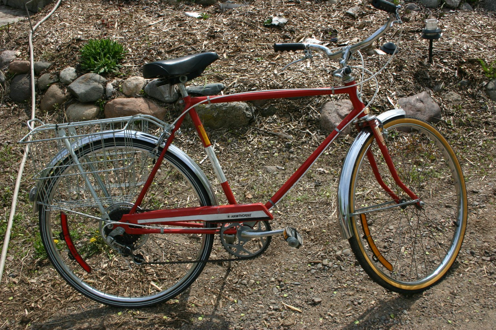

This is a high resolution image map. Try clicking on certain parts of the bike to see a close up and information about that part. I completely overhauled this bike which included a lot of derusting. Also replaceing cable housing, replacing spokes, and hub work.
